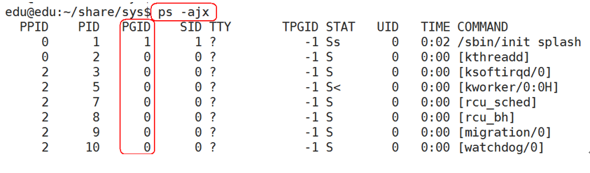
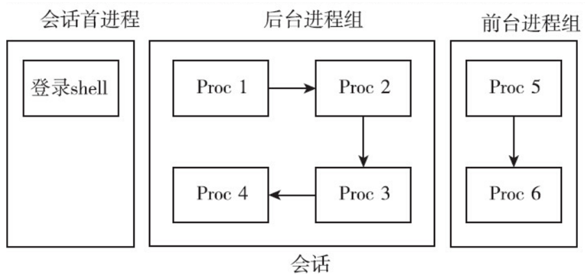
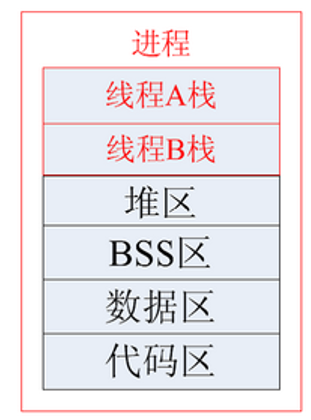
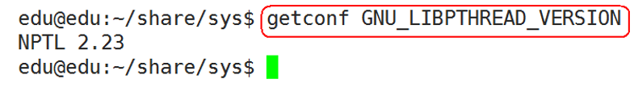
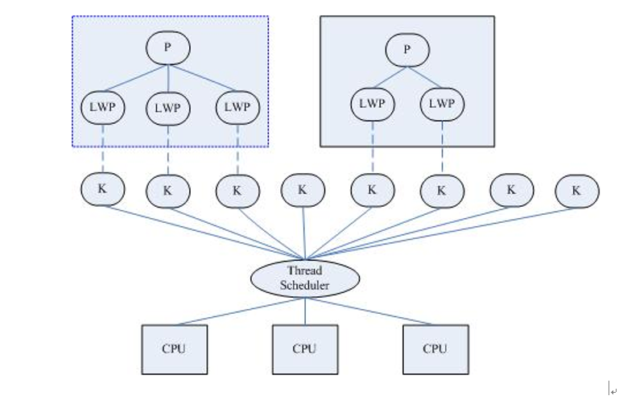

00. 目录01. 学习目标02. 终端的概念(了解)03. 进程组概念(理解)3.1 进程组概述3.2 相关函数说明04. 会话(了解)4.1 会话概念4.2 创建会话注意事项4.3 API函数介绍05. 守护进程(重点)5.1 守护进程介绍5.2 守护进程模型5.3 守护进程参考代码06. 线程简介6.1 线程概念6.2 线程函数列表安装6.3 NPTL6.4 线程的特点6.5 线程共享资源6.6 线程非共享资源6.7 线程的优缺点07. 线程常用操作7.1 线程号7.2 线程的创建7.3 线程资源回收7.4 线程分离7.5 线程退出7.6 线程取消08. 线程属性（了解）8.1 概述8.2 线程属性初始化和销毁8.3 线程分离状态8.4 线程栈地址8.5 线程栈大小8.6 综合参考程序8.7 线程使用注意事项09. 作业10. 总结
在UNIX系统中，用户通过终端登录系统后得到一个Shell进程，这个终端成为Shell进程的控制终端（Controlling Terminal），进程中，控制终端是保存在PCB中的信息，而fork会复制PCB中的信息，因此由Shell进程启动的其它进程的控制终端也是这个终端。
默认情况下（没有重定向），每个进程的标准输入、标准输出和标准错误输出都指向控制终端，进程从标准输入读也就是读用户的键盘输入，进程往标准输出或标准错误输出写也就是输出到显示器上。
信号中还讲过，在控制终端输入一些特殊的控制键可以给前台进程发信号，例如Ctrl+C表示SIGINT，Ctrl+\表示SIGQUIT。
函数说明：
x13char *ttyname(int fd);4功能：由文件描述符查出对应的文件名5参数：6 fd：文件描述符7返回值：8 成功：终端名9 失败：NULL
下面我们借助ttyname函数，通过实验看一下各种不同的终端所对应的设备文件名：
xxxxxxxxxx91int main()2{3 printf("fd 0: %s\n", ttyname(0));4 printf("fd 1: %s\n", ttyname(1));5 printf("fd 2: %s\n", ttyname(2));67 return 0;8}9
进程组，也称之为作业。BSD于1980年前后向Unix中增加的一个新特性。代表一个或多个进程的集合。
每个进程都属于一个进程组。在waitpid函数和kill函数的参数中都曾使用到。操作系统设计的进程组的概念，是为了简化对多个进程的管理。
当父进程，创建子进程的时候，默认子进程与父进程属于同一进程组。进程组ID为第一个进程ID(组长进程)。所以，组长进程标识：其进程组ID为其进程ID
可以使用kill -SIGKILL -进程组ID(负的)来将整个进程组内的进程全部杀死：

组长进程可以创建一个进程组，创建该进程组中的进程，然后终止。只要进程组中有一个进程存在，进程组就存在，与组长进程是否终止无关。
进程组生存期：进程组创建到最后一个进程离开(终止或转移到另一个进程组)。
一个进程可以为自己或子进程设置进程组ID。
xxxxxxxxxx2313pid_t getpgrp(void); /* POSIX.1 version */4功能：获取当前进程的进程组ID5参数：无6返回值：总是返回调用者的进程组ID78pid_t getpgid(pid_t pid);9功能：获取指定进程的进程组ID10参数：11 pid：进程号，如果pid = 0，那么该函数作用和getpgrp一样12返回值：13 成功：进程组ID14 失败：-11516int setpgid(pid_t pid, pid_t pgid);17功能：18 改变进程默认所属的进程组。通常可用来加入一个现有的进程组或创建一个新进程组。19参数：20 将参1对应的进程，加入参2对应的进程组中21返回值：22 成功：023 失败：-1
会话是一个或多个进程组的集合。

1) 调用进程不能是进程组组长，该进程变成新会话首进程(session header)
2) 该调用进程是组长进程，则出错返回
3) 该进程成为一个新进程组的组长进程
4) 需有root权限(ubuntu不需要)
5) 新会话丢弃原有的控制终端，该会话没有控制终端
6) 建立新会话时，先调用fork, 父进程终止，子进程调用setsid
getsid函数：
xxxxxxxxxx913pid_t getsid(pid_t pid);4功能：获取进程所属的会话ID5参数：6 pid：进程号，pid为0表示查看当前进程session ID7返回值：8 成功：返回调用进程的会话ID9 失败：-1组长进程不能成为新会话首进程，新会话首进程必定会成为组长进程。
setsid函数：
xxxxxxxxxx1013pid_t setsid(void);4功能：5 创建一个会话，并以自己的ID设置进程组ID，同时也是新会话的ID。调用了setsid函数的进程，既是新的会长，也是新的组长。6参数：无7返回值：8 成功：返回调用进程的会话ID9 失败：-110
守护进程（Daemon Process），也就是通常说的 Daemon 进程（精灵进程），是 Linux 中的后台服务进程。它是一个生存期较长的进程，通常独立于控制终端并且周期性地执行某种任务或等待处理某些发生的事件。一般采用以d结尾的名字。
守护进程是个特殊的孤儿进程，这种进程脱离终端，为什么要脱离终端呢？之所以脱离于终端是为了避免进程被任何终端所产生的信息所打断，其在执行过程中的信息也不在任何终端上显示。由于在 Linux 中，每一个系统与用户进行交流的界面称为终端，每一个从此终端开始运行的进程都会依附于这个终端，这个终端就称为这些进程的控制终端，当控制终端被关闭时，相应的进程都会自动关闭。
Linux 的大多数服务器就是用守护进程实现的。比如，Internet 服务器 inetd，Web 服务器 httpd 等。
1) 创建子进程，父进程退出(必须)
2) 在子进程中创建新会话(必须)
3) 改变当前目录为根目录(不是必须)
4) 重设文件权限掩码(不是必须)
5) 关闭文件描述符(不是必须)
6) 开始执行守护进程核心工作(必须)
守护进程退出处理程序模型
写一个守护进程, 每隔2s获取一次系统时间, 将这个时间写入到磁盘文件：
xxxxxxxxxx951/*2* time_t rawtime;3* time ( &rawtime ); --- 获取时间，以秒计，从1970年1月一日起算，存于rawtime4* localtime ( &rawtime ); //转为当地时间，tm 时间结构5* asctime() // 转为标准ASCII时间格式：6*/7void write_time(int num)8{9 time_t rawtime;10 struct tm * timeinfo;11 // 获取时间12 time(&rawtime);13 // 转为本地时间15 timeinfo = localtime(&rawtime);16 // 转为标准ASCII时间格式17 char *cur = asctime(timeinfo);18 char* cur = ctime(&rawtime);2022 // 将得到的时间写入文件中23 int fd = open("/home/edu/timelog.txt", O_RDWR | O_CREAT | O_APPEND, 0664);24 if (fd == -1)25 {26 perror("open error");27 exit(1);28 }29 // 写文件30 int ret = write(fd, cur, strlen(cur) + 1);31 if (ret == -1)32 {33 perror("write error");34 exit(1);35 }36 // 关闭文件37 close(fd);38}3940int main(int argc, const char* argv[])41{42 pid_t pid = fork();43 if (pid == -1)44 {45 perror("fork error");46 exit(1);47 }4849 if (pid > 0)50 {51 // 父进程退出52 exit(1);53 }54 else if (pid == 0)55 {56 // 子进程57 // 提升为会长，同时也是新进程组的组长58 setsid();5960 // 更改进程的执行目录61 chdir("/home/edu");6263 // 更改掩码64 umask(0022);6566 // 关闭文件描述符67 close(STDIN_FILENO);68 close(STDOUT_FILENO);69 close(STDERR_FILENO);7071 // 注册信号捕捉函数72 //先注册，再定时73 struct sigaction sigact;74 sigact.sa_flags = 0;75 sigemptyset(&sigact.sa_mask);76 sigact.sa_handler = write_time;77 sigaction(SIGALRM, &sigact, NULL);7879 // 设置定时器80 struct itimerval act;81 // 定时周期82 act.it_interval.tv_sec = 2;83 act.it_interval.tv_usec = 0;84 // 设置第一次触发定时器时间85 act.it_value.tv_sec = 2;86 act.it_value.tv_usec = 0;87 // 开始计时88 setitimer(ITIMER_REAL, &act, NULL);8990 // 防止子进程退出91 while (1);92 }9394 return 0;95}
在许多经典的操作系统教科书中，总是把进程定义为程序的执行实例，它并不执行什么, 只是维护应用程序所需的各种资源，而线程则是真正的执行实体。
所以，线程是轻量级的进程（LWP：light weight process），在Linux环境下线程的本质仍是进程。
为了让进程完成一定的工作，进程必须至少包含一个线程。

进程，直观点说，保存在硬盘上的程序运行以后，会在内存空间里形成一个独立的内存体，这个内存体有自己的地址空间，有自己的堆，上级挂靠单位是操作系统。操作系统会以进程为单位，分配系统资源，所以我们也说，进程是CPU分配资源的最小单位。
线程存在与进程当中(进程可以认为是线程的容器)，是操作系统调度执行的最小单位。说通俗点，线程就是干活的。
进程是具有一定独立功能的程序关于某个数据集合上的一次运行活动，进程是系统进行资源分配和调度的一个独立单位。
线程是进程的一个实体，是 CPU 调度和分派的基本单位，它是比进程更小的能独立运行的基本单位。线程自己基本上不拥有系统资源，只拥有一点在运行中必不可少的资源（如程序计数器，一组寄存器和栈），但是它可与同属一个进程的其他的线程共享进程所拥有的全部资源。
如果说进程是一个资源管家，负责从主人那里要资源的话，那么线程就是干活的苦力。一个管家必须完成一项工作，就需要最少一个苦力，也就是说，一个进程最少包含一个线程，也可以包含多个线程。苦力要干活，就需要依托于管家，所以说一个线程，必须属于某一个进程。
进程有自己的地址空间，线程使用进程的地址空间，也就是说，进程里的资源，线程都是有权访问的，比如说堆啊，栈啊，静态存储区什么的。
进程是操作系统分配资源的最小单位
线程是操作系统调度的最小单位
命令：
sudo apt-get install manpages-posix-dev
【说明】manpages-posix-dev 包含 POSIX 的 header files 和 library calls 的用法
查看：
man -k pthread
当 Linux 最初开发时，在内核中并不能真正支持线程。但是它的确可以通过 clone() 系统调用将进程作为可调度的实体。这个调用创建了调用进程（calling process）的一个拷贝，这个拷贝与调用进程共享相同的地址空间。LinuxThreads 项目使用这个调用来完全在用户空间模拟对线程的支持。不幸的是，这种方法有一些缺点，尤其是在信号处理、调度和进程间同步原语方面都存在问题。另外，这个线程模型也不符合 POSIX 的要求。
要改进 LinuxThreads，非常明显我们需要内核的支持，并且需要重写线程库。有两个相互竞争的项目开始来满足这些要求。一个包括 IBM 的开发人员的团队开展了 NGPT（Next-Generation POSIX Threads）项目。同时，Red Hat 的一些开发人员开展了 NPTL 项目。NGPT 在 2003 年中期被放弃了，把这个领域完全留给了 NPTL。
NPTL，或称为 Native POSIX Thread Library，是 Linux 线程的一个新实现，它克服了 LinuxThreads 的缺点，同时也符合 POSIX 的需求。与 LinuxThreads 相比，它在性能和稳定性方面都提供了重大的改进。
查看当前pthread库版本：getconf GNU_LIBPTHREAD_VERSION

类Unix系统中，早期是没有“线程”概念的，80年代才引入，借助进程机制实现出了线程的概念。
因此在这类系统中，进程和线程关系密切：
1) 线程是轻量级进程(light-weight process)，也有PCB，创建线程使用的底层函数和进程一样，都是clone
2) 从内核里看进程和线程是一样的，都有各自不同的PCB.
3) 进程可以蜕变成线程
4) 在linux下，线程最是小的执行单位；进程是最小的分配资源单位

查看指定进程的LWP号：
ps -Lf pid
实际上，无论是创建进程的fork，还是创建线程的pthread_create，底层实现都是调用同一个内核函数 clone 。
Ø 如果复制对方的地址空间，那么就产出一个“进程”；
Ø 如果共享对方的地址空间，就产生一个“线程”。
Linux内核是不区分进程和线程的, 只在用户层面上进行区分。所以，线程所有操作函数 pthread_* 是库函数，而非系统调用。
1) 文件描述符表
2) 每种信号的处理方式
3) 当前工作目录
4) 用户ID和组ID
内存地址空间 (.text/.data/.bss/heap/共享库)
1) 线程id
2) 处理器现场和栈指针(内核栈)
3) 独立的栈空间(用户空间栈)
4) errno变量
5) 信号屏蔽字
6) 调度优先级
优点：
Ø 提高程序并发性
Ø 开销小
Ø 数据通信、共享数据方便
缺点：
Ø 库函数，不稳定
Ø 调试、编写困难、gdb不支持
Ø 对信号支持不好
优点相对突出，缺点均不是硬伤。Linux下由于实现方法导致进程、线程差别不是很大。
就像每个进程都有一个进程号一样，每个线程也有一个线程号。进程号在整个系统中是唯一的，但线程号不同，线程号只在它所属的进程环境中有效。
进程号用 pid_t 数据类型表示，是一个非负整数。线程号则用 pthread_t 数据类型来表示，Linux 使用无符号长整数表示。
有的系统在实现pthread_t 的时候，用一个结构体来表示，所以在可移植的操作系统实现不能把它做为整数处理。
pthread_self函数：
xxxxxxxxxx1013pthread_t pthread_self(void);4功能：5 获取线程号。6参数：7 无8返回值：9 调用线程的线程 ID 。10
pthread_equal函数:
xxxxxxxxxx81int pthread_equal(pthread_t t1, pthread_t t2);2功能：3 判断线程号 t1 和 t2 是否相等。为了方便移植，尽量使用函数来比较线程 ID。4参数：5 t1，t2：待判断的线程号。6返回值：7 相等： 非 08 不相等：0参考程序：
xxxxxxxxxx181int main()2{3 pthread_t thread_id;45 thread_id = pthread_self(); // 返回调用线程的线程ID6 printf("Thread ID = %lu \n", thread_id);78 if (0 != pthread_equal(thread_id, pthread_self()))9 {10 printf("Equal!\n");11 }12 else13 {14 printf("Not equal!\n");15 }1617 return 0;18}【注意】线程函数的程序在 pthread 库中，故链接时要加上参数 -lpthread。
pthread_create函数：
xxxxxxxxxx1613int pthread_create(pthread_t *thread,4 const pthread_attr_t *attr,5 void *(*start_routine)(void *),6 void *arg );7功能：8 创建一个线程。9参数：10 thread：线程标识符地址。11 attr：线程属性结构体地址，通常设置为 NULL。12 start_routine：线程函数的入口地址。13 arg：传给线程函数的参数。14返回值：15 成功：016 失败：非 0在一个线程中调用pthread_create()创建新的线程后，当前线程从pthread_create()返回继续往下执行，而新的线程所执行的代码由我们传给pthread_create的函数指针start_routine决定。
由于pthread_create的错误码不保存在errno中，因此不能直接用perror()打印错误信息，可以先用strerror()把错误码转换成错误信息再打印。
参考程序：
xxxxxxxxxx281// 回调函数2void *thread_fun(void * arg)3{4 sleep(1);5 int num = *((int *)arg);6 printf("int the new thread: num = %d\n", num);78 return NULL;9}1011int main()12{13 pthread_t tid;14 int test = 100;1516 // 返回错误号17 int ret = pthread_create(&tid, NULL, thread_fun, (void *)&test);18 if (ret != 0)19 {20 printf("error number: %d\n", ret);21 // 根据错误号打印错误信息22 printf("error information: %s\n", strerror(ret));23 }2425 while (1);2627 return 0;28}
pthread_join函数：
xxxxxxxxxx1213int pthread_join(pthread_t thread, void **retval);4功能：5 等待线程结束（此函数会阻塞），并回收线程资源，类似进程的 wait() 函数。如果线程已经结束，那么该函数会立即返回。6参数：7 thread：被等待的线程号。8 retval：用来存储线程退出状态的指针的地址。9返回值：10 成功：011 失败：非 012
参考程序：
xxxxxxxxxx281void *thead(void *arg)2{3 static int num = 123; //静态变量45 printf("after 2 seceonds, thread will return\n");6 sleep(2);78 return #9}1011int main()12{13 pthread_t tid;14 int ret = 0;15 void *value = NULL;1617 // 创建线程18 pthread_create(&tid, NULL, thead, NULL);192021 // 等待线程号为 tid 的线程，如果此线程结束就回收其资源22 // &value保存线程退出的返回值23 pthread_join(tid, &value);2425 printf("value = %d\n", *((int *)value));2627 return 0;28}调用该函数的线程将挂起等待，直到id为thread的线程终止。thread线程以不同的方法终止，通过pthread_join得到的终止状态是不同的，总结如下：
1) 如果thread线程通过return返回，retval所指向的单元里存放的是thread线程函数的返回值。
2) 如果thread线程被别的线程调用pthread_cancel异常终止掉，retval所指向的单元里存放的是常数PTHREAD_CANCELED。
3) 如果thread线程是自己调用pthread_exit终止的，retval所指向的单元存放的是传给pthread_exit的参数。
一般情况下，线程终止后，其终止状态一直保留到其它线程调用pthread_join获取它的状态为止。但是线程也可以被置为detach状态，这样的线程一旦终止就立刻回收它占用的所有资源，而不保留终止状态。
不能对一个已经处于detach状态的线程调用pthread_join，这样的调用将返回EINVAL错误。也就是说，如果已经对一个线程调用了pthread_detach就不能再调用pthread_join了。
pthread_detach函数：
xxxxxxxxxx1013int pthread_detach(pthread_t thread);4功能：5 使调用线程与当前进程分离，分离后不代表此线程不依赖与当前进程，线程分离的目的是将线程资源的回收工作交由系统自动来完成，也就是说当被分离的线程结束之后，系统会自动回收它的资源。所以，此函数不会阻塞。6参数：7 thread：线程号。8返回值：9 成功：010 失败：非0
在进程中我们可以调用exit函数或_exit函数来结束进程，在一个线程中我们可以通过以下三种在不终止整个进程的情况下停止它的控制流。
pthread_exit函数：
xxxxxxxxxx913void pthread_exit(void *retval);4功能：5 退出调用线程。一个进程中的多个线程是共享该进程的数据段，因此，通常线程退出后所占用的资源并不会释放。6参数：7 retval：存储线程退出状态的指针。8返回值：无 9参考程序:
xxxxxxxxxx341void *thread(void *arg)2{3 static int num = 123; //静态变量4 int i = 0;5 while (1)6 {7 printf("I am runing\n");8 sleep(1);9 i++;10 if (i == 3)11 {12 pthread_exit((void *)&num);13 // return #14 }15 }1617 return NULL;18}1920int main(int argc, char *argv[])21{22 int ret = 0;23 pthread_t tid;24 void *value = NULL;2526 pthread_create(&tid, NULL, thread, NULL);272829 pthread_join(tid, &value);30 printf("value = %d\n", *(int *)value);3132 return 0;33}34xxxxxxxxxx1113int pthread_cancel(pthread_t thread);4功能：5 杀死(取消)线程6参数：7 thread : 目标线程ID。8返回值：9 成功：010 失败：出错编号11注意：线程的取消并不是实时的，而又一定的延时。需要等待线程到达某个取消点(检查点)。
类似于玩游戏存档，必须到达指定的场所(存档点，如：客栈、仓库、城里等)才能存储进度。
杀死线程也不是立刻就能完成，必须要到达取消点。
取消点：是线程检查是否被取消，并按请求进行动作的一个位置。通常是一些系统调用creat，open，pause，close，read，write..... 执行命令man 7 pthreads可以查看具备这些取消点的系统调用列表。
可粗略认为一个系统调用(进入内核)即为一个取消点。
参考程序:
xxxxxxxxxx221void *thread_cancel(void *arg)2{3 while (1)4 {5 pthread_testcancel(); //设置取消点6 }7 return NULL;8}910int main()11{12 pthread_t tid;13 pthread_create(&tid, NULL, thread_cancel, NULL); //创建线程1415 sleep(3); //3秒后16 pthread_cancel(tid); //取消tid线程1718 pthread_join(tid, NULL);1920 return 0;21}22
Linux下线程的属性是可以根据实际项目需要，进行设置，之前我们讨论的线程都是采用线程的默认属性，默认属性已经可以解决绝大多数开发时遇到的问题。
如我们对程序的性能提出更高的要求那么需要设置线程属性，比如可以通过设置线程栈的大小来降低内存的使用，增加最大线程个数。
xxxxxxxxxx121typedef struct2{3 int etachstate; //线程的分离状态4 int schedpolicy; //线程调度策略5 struct sched_param schedparam; //线程的调度参数6 int inheritsched; //线程的继承性7 int scope; //线程的作用域8 size_t guardsize; //线程栈末尾的警戒缓冲区大小9 int stackaddr_set; //线程的栈设置10 void* stackaddr; //线程栈的位置11 size_t stacksize; //线程栈的大小12} pthread_attr_t;主要结构体成员：
1) 线程分离状态
2) 线程栈大小（默认平均分配）
3) 线程栈警戒缓冲区大小（位于栈末尾）
4) 线程栈最低地址
属性值不能直接设置，须使用相关函数进行操作，初始化的函数为pthread_attr_init，这个函数必须在pthread_create函数之前调用。之后须用pthread_attr_destroy函数来释放资源。
线程属性主要包括如下属性：作用域（scope）、栈尺寸（stack size）、栈地址（stack address）、优先级（priority）、分离的状态（detached state）、调度策略和参数（scheduling policy and parameters）。默认的属性为非绑定、非分离、缺省的堆栈、与父进程同样级别的优先级。
xxxxxxxxxx1913int pthread_attr_init(pthread_attr_t *attr);4功能：5 初始化线程属性函数，注意：应先初始化线程属性，再pthread_create创建线程6参数：7 attr：线程属性结构体8返回值：9 成功：010 失败：错误号1112int pthread_attr_destroy(pthread_attr_t *attr);13功能：14 销毁线程属性所占用的资源函数15参数：16 attr：线程属性结构体17返回值：18 成功：019 失败：错误号线程的分离状态决定一个线程以什么样的方式来终止自己。
相关函数：
xxxxxxxxxx2413int pthread_attr_setdetachstate(pthread_attr_t *attr, int detachstate);4功能：设置线程分离状态5参数：6 attr：已初始化的线程属性7 detachstate： 分离状态8 PTHREAD_CREATE_DETACHED（分离线程）9 PTHREAD_CREATE_JOINABLE（非分离线程）10返回值：11 成功：012 失败：非01314int pthread_attr_getdetachstate(const pthread_attr_t *attr, int *detachstate);15功能：获取线程分离状态16参数：17 attr：已初始化的线程属性18 detachstate： 分离状态19 PTHREAD_CREATE_DETACHED（分离线程）20 PTHREAD _CREATE_JOINABLE（非分离线程）21返回值：22 成功：023 失败：非024这里要注意的一点是，如果设置一个线程为分离线程，而这个线程运行又非常快，它很可能在pthread_create函数返回之前就终止了，它终止以后就可能将线程号和系统资源移交给其他的线程使用，这样调用pthread_create的线程就得到了错误的线程号。
要避免这种情况可以采取一定的同步措施，最简单的方法之一是可以在被创建的线程里调用pthread_cond_timedwait函数，让这个线程等待一会儿，留出足够的时间让函数pthread_create返回。
设置一段等待时间，是在多线程编程里常用的方法。但是注意不要使用诸如wait()之类的函数，它们是使整个进程睡眠，并不能解决线程同步的问题。
POSIX.1定义了两个常量来检测系统是否支持栈属性：
也可以给sysconf函数传递来进行检测：
当进程栈地址空间不够用时，指定新建线程使用由malloc分配的空间作为自己的栈空间。通过pthread_attr_setstack和pthread_attr_getstack两个函数分别设置和获取线程的栈地址。
xxxxxxxxxx2213int pthread_attr_setstack(pthread_attr_t *attr, void *stackaddr, size_t stacksize);4功能：设置线程的栈地址5参数：6 attr：指向一个线程属性的指针7 stackaddr：内存首地址8 stacksize：返回线程的堆栈大小9返回值：10 成功：011 失败：错误号1213int pthread_attr_getstack(const pthread_attr_t *attr, void **stackaddr, size_t *stacksize);14功能：获取线程的栈地址15参数：16 attr：指向一个线程属性的指针17 stackaddr：返回获取的栈地址18 stacksize：返回获取的栈大小19返回值：20 成功：021 失败：错误号22
当系统中有很多线程时，可能需要减小每个线程栈的默认大小，防止进程的地址空间不够用,当线程调用的函数会分配很大的局部变量或者函数调用层次很深时，可能需要增大线程栈的默认大小。
xxxxxxxxxx2013int pthread_attr_setstacksize(pthread_attr_t *attr, size_t stacksize);4功能：设置线程的栈大小5参数：6 attr：指向一个线程属性的指针7 stacksize：线程的堆栈大小8返回值：9 成功：010 失败：错误号1112int pthread_attr_getstacksize(const pthread_attr_t *attr, size_t *stacksize);13功能：获取线程的栈大小14参数： 15 attr：指向一个线程属性的指针16 stacksize：返回线程的堆栈大小17返回值：18 成功：019 失败：错误号20
xxxxxxxxxx6213void *th_fun(void *arg)4{5 while (1)6 {7 sleep(1);8 }9}1011int main()12{13 pthread_t tid;14 int err, detachstate, i = 1;1516 pthread_attr_t attr;17 size_t stacksize;18 void *stackaddr;1920 pthread_attr_init(&attr); //线程属性初始化21 pthread_attr_getstack(&attr, &stackaddr, &stacksize); //获取线程的栈地址22 pthread_attr_getdetachstate(&attr, &detachstate); //获取线程分离状态2324 if (detachstate == PTHREAD_CREATE_DETACHED)25 {26 printf("thread detached\n");27 }28 else if (detachstate == PTHREAD_CREATE_JOINABLE)29 {30 printf("thread join\n");31 }32 else33 {34 printf("thread unknown\n");35 }36 37 pthread_attr_setdetachstate(&attr, PTHREAD_CREATE_DETACHED); //设置分离状态3839 while (1) 40 {41 stackaddr = malloc(SIZE);42 if (stackaddr == NULL) 43 {44 perror("malloc");45 exit(1);46 }4748 stacksize = SIZE;49 pthread_attr_setstack(&attr, stackaddr, stacksize); //设置线程的栈地址50 err = pthread_create(&tid, &attr, th_fun, NULL); //创建线程51 if (err != 0) 52 {53 printf("%s\n", strerror(err));54 exit(1);55 }56 printf("%d\n", i++);57 }5859 pthread_attr_destroy(&attr); //销毁线程属性所占用的资源函数6061 return 0;62}1) 主线程退出其他线程不退出，主线程应调用pthread_exit
2) 避免僵尸线程
a) pthread_join
b) pthread_detach
c) pthread_create指定分离属性
被join线程可能在join函数返回前就释放完自己的所有内存资源，所以不应当返回被回收线程栈中的值;
3) malloc和mmap申请的内存可以被其他线程释放
4) 应避免在多线程模型中调用fork，除非马上exec，子进程中只有调用fork的线程存在，其他线程t在子进程中均pthread_exit
5) 信号的复杂语义很难和多线程共存，应避免在多线程引入信号机制
1） 创建两个子线程， 第一个子线程输出所有的大写字母(A-Z)，第二个子线程输出所有小写字母(a-z)，每输出一个字母都要睡眠(usleep)。 100ms